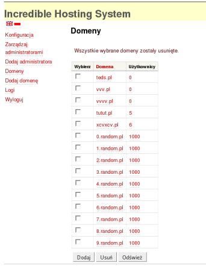
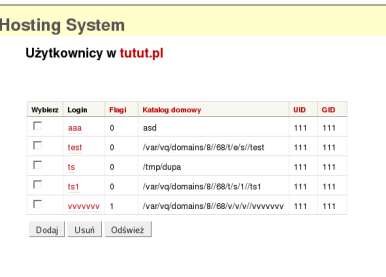
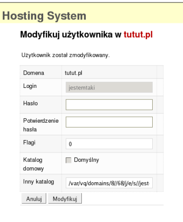
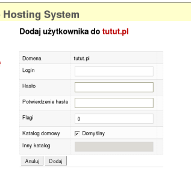

Rysunek 3-14. List domen
Rysunek 3-15. Usuwanie domeny, krok 1
Rysunek 3-16. Usuwanie domeny, krok 2

Rysunek 3-17. Lista u¿ytkowników

Rysunek 3-18. Dodawanie u¿ytkownika, krok 1

Rysunek 3-19. Dodawanie u¿ytkownika, krok 2
